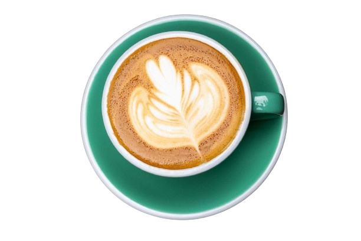

Cappuccino is a latte made with more foam than steamed milk, often with a sprinkle of cocoa powder or cinnamon on top. Sometimes you can find variations that use cream instead of milk or ones that throw in flavor shot, as well.
CAPPUCCINO
Cappuccino is a latte made with more foam than steamed milk, often with a sprinkle of cocoa powder or cinnamon on top. Sometimes you can find variations that use cream instead of milk or ones that throw in flavor shot, as well.